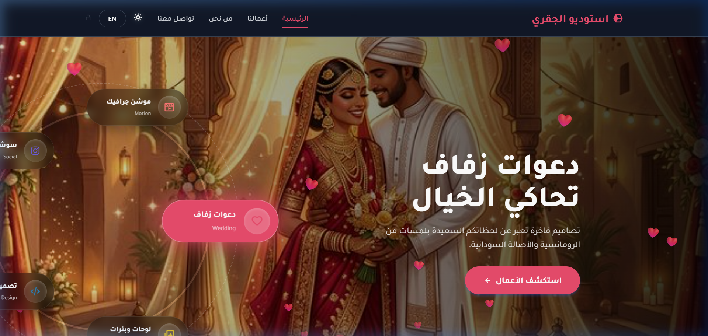

موقع مباشر

استوديو تصميم وخدمات رقمية
استوديو الجقري للتصميم (Aljagary Studio)
موقع متكامل ومتميز مخصص لطلب وتصفح خدمات التصميم الرقمي الاحترافية، بما في ذلك كروت وفيديوهات دعوات الزفاف والمناسبات، الفيديوهات الإعلانية والتجارية، والموشن جرافيك، وتصاميم الهويات البصرية والسوشيال ميديا والبنرات. يتميز الموقع بنظام الترس التفاعلي المبتكر (Interactive Gear System) لتغيير الثيمات واستعراض فئات التصميم بسلاسة فائقة، مع دعم كامل للغتين والوضع الليلي.
HTML5 / CSS3
JavaScript Dynamic UI
Interactive Gear Wheel
Responsive Design
Netlify
Bilingual AR/EN
- طلب وتصفح كروت وفيديوهات دعوات الزفاف والمناسبات
- فيديوهات إعلانية وتصاميم موشن جرافيك وسوشيال ميديا
- عجلة تفاعلية حركية (Interactive Gear Wheel) للتنقل بين الخدمات
- معرض أعمال ديناميكي متجاوب بالكامل وتصميم فائق الأناقة